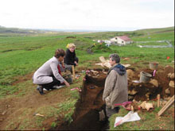

The Mosfell Archaeological Project is an international research project employing the tools of history, archaeology, anthropology, genetics, saga studies and environmental sciences to construct a comprehensive picture of human adaptation and environmental change in the Mosfell region of southwestern Iceland beginning in the Viking Age. See the recent article in Backdirt.
Now, in 2022, we are happy to say that the Mosfell Archaeological Project has been working on publishing annual reports from MAP's fieldwork seasons. These reports present in-the-moment, primary data, within a distilled, edited format. This space will be updated on an ongoing basis as regards these releases.
The summary below explains details of the overall project. Explore the excavations and surveys year-by-year in the Archaeological Field Work section here.
Research Summary and Project Goals
The Mosfell Archaeological Project is an interdisciplinary research project employing the tools of history, archaeology, anthropology, forensics, environmental sciences, and saga studies. The work will construct a picture of human habitation and environmental change in the region of Mosfell in southwestern Iceland. The Mosfell Valley (Mosfellsdalur), the surrounding highlands, and the lowland coastal areas are a Avalley system, that is, as an interlocking series of natural and man-made pieces, that beginning in the ninth-century settlement or landnám period developed into a functioning Viking Age, Icelandic community. Focusing on this valley system, our task is to unearth the prehistory and early history of the Mosfell region. We seek the data to provide an in-depth understanding of how this countryside or sveit evolved from its earliest origins. See Part 6 of the the video “A Viking Landscape.”
The Mosfell Archaeological Project has implications for the larger study of Viking Age and later medieval Iceland, as well as perhaps for the north Atlantic world. Mosfellssveit encapsulates the major ecologies of Iceland: coastal, riverine, and highland. Culturally, the region is equally representative. In some ways it was a self-contained social and economic unit. In other ways, it was connected to the rest of Iceland, not least, through a network of roads, including an east-west route to the nearby meeting of the yearly Althing. With its coastal port at Leiruvogur, the region was in commercial and cultural contact with the larger Scandinavian and European worlds, possibly as far east as Constantinople.
The research, in reconstructing the early social history of the Mosfell Valley region, will integrate information on the changing periods of occupation. We will excavate individual sites, both secular and religious, and consider their placement in relationship to one another. We will examine the apportionment of open spaces and the utilization of common lands in the highlands and on the coast. Written, archaeological, and other scientific information will be integrated into this study as we construct a picture of early life.
The different specialists on our team will explore among other subjects the development of roads and paths, the importance of the ships landings at Leiruvogur, the changes over time in subsistence strategies, the state of health and disease in the Viking Age and later population, developments in building technics, and the usage of smaller activity areas, such as the sel, or summer dairy stations. Crucial tasks are finding the locations of early farm sites, the remains of turf buildings, roads, burials, agricultural enclosures, and port facilities before they are destroyed by modern construction or lost to human memory.

Ragnheiður Ríkharðsdóttir, the Bæjarstjóri (Mayor) of Mosfellsbær discussing the excavation with Patricia Lambert and Jesse Byock.